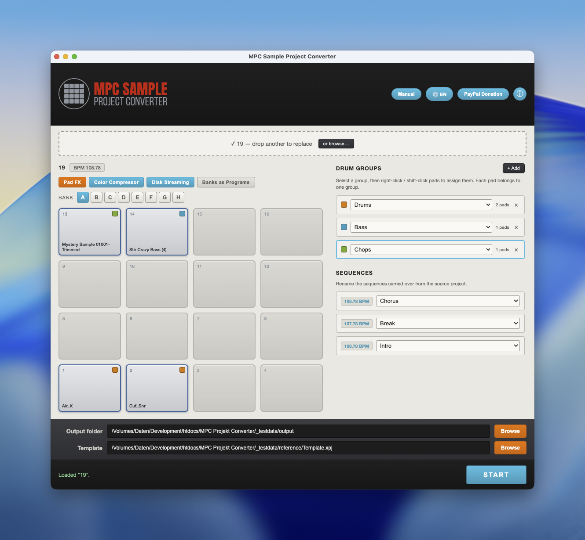
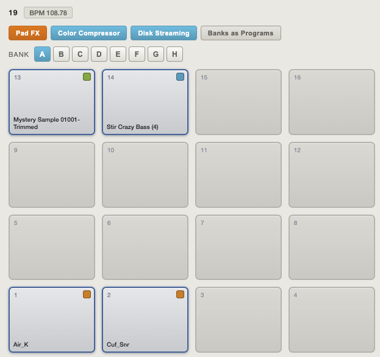
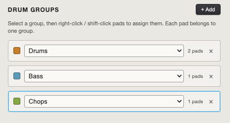
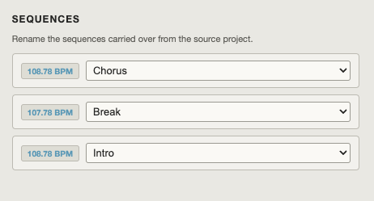
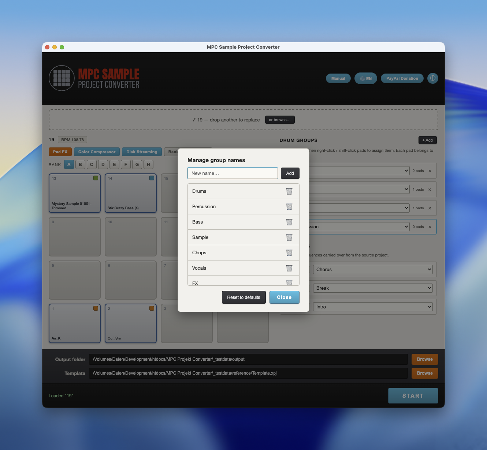

The MPC X can already import MPC Sample projects, but it does it its own way. This app rebuilds them inside your own template, so every converted beat keeps your mixer, submixes, sends and master FX exactly the way you set them up.
Standalone desktop app · macOS & Windows · no Python, no installation hassle.

Pick your MPC X template once. The converter keeps its mixer, submixes, sends, master FX and full track layout untouched — only the samples and sequences come over from the source project.
See every loaded pad across all 8 banks (A–H). Click a pad's play button to preview the sample, stop it any time — handy for the long loops. FX-routed pads are marked so you always know what's wet.

Assign pads to one or more drum groups before converting. Name groups from a preset list (Drums, Bass, Chops, Guitar, Loops, Strings…) or add your own. Each group becomes its own MPC X program.

Every sequence (and the Song Mode playlist) is carried over. Rename each one from musical presets — Intro, Verse, Chorus, Bridge, Buildup, Break, Drop, Outro — or your own labels.

Add, delete and reset the group- and sequence-name presets. Your custom names are remembered between sessions, so your workflow stays yours.

Free. Runs standalone — no Python or extra runtime required.